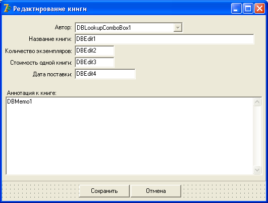

Методы редактирования баз данных
Редактирование данных подразумевает под собой внесение изменений в записи, добавление или удаление записи.
Если вы видите набор данных, это еще не значит, что вы можете их редактировать.
Дело в том, что база данных ведь может быть и сетевая, а значит, ее одновременно могут редактировать несколько сотрудников.
Для того, чтобы они не мешали друг другу, и не испортили запись таблицы при сохранении, существуют методы редактирования данных.
Типичный пример редактирования данных выглядит следующим образом:
Table1.Edit; //вошли в режим редактирования Table1['FIO'] := 'Лермонтов М.Ю.'; //присвоили значение текущей записи и полю FIO Table1.Post; //приняли изменения
А если требуется по всей таблице какому-то полю присвоить одно и то же значение, например, дату, то цикл будет выглядеть так:
Table1.First;
Table1.Edit;
while not Table1.Eof do begin
Table1['Date'] := StrToDate('01.01.2008');
Table1.Next;
end; //while
Table1.Post;
Итак, разберемся с некоторыми методами таблицы Table:
Edit – переключает таблицу в режим редактирования.
Post – сохраняет результаты редактирования в таблицу.
Insert – вставляет новую строку в месте указателя, и включает режим редактирования.
Append – вставляет пустую строку в конец таблицы, переводит указатель на нее и включает режим редактирования.
Cancel – отменяет внесенные, но не зафиксированные изменения, и отключает режим редактирования.
Внимание! Если вы внесли изменения в запись, то перемещение на другую запись вызовет безусловное сохранение изменений, как если бы вы вызвали метод Post.
Таким образом, в предыдущем примере метод Post сохраняет изменение лишь последней записи, а все остальные записи сохранялись при вызове метода Next.
Поэтому во время редактирования будьте аккуратны с использованием методов Next, Prior, First, Last – они сохраняют внесенные изменения.
Подводя итог вышесказанного, можно привести инструкцию действий, которые необходимо выполнить для редактирования одного или нескольких полей записи:
Вызвать метод Edit для включения режима редактирования.
Назначить новые значения требуемому полю или полям.
Вызвать метод Post или переместиться на другую запись, чтобы принять все изменения, и выключить режим редактирования.
Вернемся к нашему проекту, к окну добавления авторов.
Вначале нам нужно будет сделать кнопку "Добавить" доступной, когда пользователь введет в поле Edit какую-нибудь запись.
Выделите Edit и сгенерируйте для него событие onChange, в котором напишите:
Button1.Enabled := True;
Далее, создайте обработчик нажатия кнопки "Добавить":
fDm.TAvtors.Append; //добавляем строку в конец таблицы fDm.TAvtors['FIO'] := Edit1.Text; //присваиваем значение fDm.TAvtors.Post; //принимаем изменения Button1.Enabled := False; //снова отключаем кнопку Edit1.Text := ''; //очищаем поле Edit
Код кнопки "Удалить текущую запись" будет таким:
//удаляем запись, если таблица не пуста:
if not fDm.TAvtors.Eof then fDm.TAvtors.Delete
else ShowMessage('Таблица пуста!');
Все, с формой добавления авторов мы закончили.
Однако имейте в виду, что если вы добавили двух авторов, то их порядковый номер будет 1 и 2.
Затем, если вы удалите их, то следующий автор, несмотря на то, что он будет единственным, будет иметь порядковый номер 3, так как автоинкремент сохраняет последнюю цифру счетчика в таблице.
С одной стороны плохо, если авторы у нас будут идти не по порядку.
С другой стороны представьте, что в будущем мы удалим автора под номером 4.
Если мы будем сдвигать счетчик по порядку, то под номером 4 окажется другой автор.
А поскольку эта таблица будет связана с таблицей книг, там окажется ошибка – книга предыдущего автора будет числиться под новым автором.
Поэтому лучше, чтобы номера авторов шли не по порядку, чем сделать ошибку и вывести в таблице неверные данные.
Так что будьте аккуратны при вводе данных в эту таблицу, и пока что старайтесь не удалять их.
Мы подошли к моменту, когда нужно приступить к редактированию нашей базы данных – библиотечного каталога.
Для этого создайте новую форму.
В свойстве Name укажите fBook, в свойстве Caption – "Редактирование книги".
В свойстве BorderStyle выберите bsDialog, сохраните форму, дав модулю имя Book.
Подключите к ней модуль DM с помощью File – Use Unit.
Бросьте на форму обычную панель, в свойстве Align которой укажите alTop, чтобы занять весь верх.
Растяните ее почти по всей форме, только чтобы внизу осталось место для двух кнопок.
Свойство Caption, конечно, очистите.
Теперь перейдите на вкладку Data Controls.
С этой вкладки установите следующие компоненты, учитывая, что слева от них будет по одному Label с названием поля:
DBLookupComboBox – 1шт. DBEdit – 4 шт. DBMemo – 1 шт.
Слева от всех компонентов, кроме DBMemo бросьте Label, и еще один – в левой части сверху от DBMemo.
У самого DBMemo не забудьте в свойстве ScrollBar установить вертикальную прокрутку.
Должна получиться такая картина:
На этой форме мы сможем как добавлять книги, так и редактировать существующие.
Поле Key1 здесь мы не указывали, так как это – счетчик, и пользователю не обязательно его видеть.
Теперь выделите все компоненты работы с БД (все, кроме Label ).
Чтобы в них отображались данные выбранного поля, необходимо в свойстве DataSource указать DS1, который обеспечивает связь с таблицей книг.
Далее, требуется каждый компонент привязать к нужному полю, выбрав его в списке DataField.
Для всех компонентов, кроме DBLookupComboBox этого достаточно.
Выделите DBLookupComboBox.
В свойстве ListSource нужно указать тот DataSource, который управляет данными таблицы, из которой мы будем брать подставляемые значения.
У нас это DS2.
Мы будем заполнять этот компонент списком авторов в виде "Фамилия И.О.", и вместо него в основную таблицу подставлять номер этого автора – поле Key2.
В свойстве ListField нужно указать поле, из которого мы будем брать данные, это FIO.
А в свойстве KeyField нужно указать поле, значение которого будем подставлять в нашу таблицу книг – это Key2.
Теперь подумаем над тем, как облегчить пользователю ввод даты.
Ведь нам требуется, чтобы он всегда вводил дату в одном и том же формате, значит нужно установить маску для ввода.
Выделите поле с датой.
В свойстве EditMask укажите маску для ввода даты, как мы это делали с компонентом MaskEdit.
Обычно для дат рекомендуется устанавливать маску "99/99/9999".
Далее, эти данные желательно бы выводить на экран в красивом формате.
Для этого служит свойство DisplayFormat.
Программисты любят выводить полную дату, для этого напишем "dddddd".
Маска для вывода здесь такая же, как у функции FormatDateTime, которую мы с вами проходили ранее.
Найдите в конспекте эту функцию и посмотрите, какие могут быть форматы.
Чтобы полный формат даты помещался в сетке DBGrid, свойство DisplayWidth установите в 17, это оптимальный размер для полной даты.
Возможно, сейчас вам все это кажется китайской грамотой.
Однако данный материал вовсе не сложен, просто здесь приходится выполнять много действий.
Не пугайтесь, после 2-3 собственных программ с базами данных все это покажется вам детской игрой.
Теперь сгенерируем обработчик нажатия на кнопку "Сохранить".
Там напишем следующий код:
//Если изменения были, принимаем их: if fDM.TBooks.Modified then fDM.TBooks.Post; Close;
Свойство таблицы Modified возвратит True, если данные таблицы были изменены.
В этом случае методом Post мы принимаем эти изменения, физически записывая их в таблицу.
Для кнопки "Отмена" код будет другим:
//Отменяем изменения: fDM.TBooks.Cancel; Close;
Обратите внимание – мы с вами создаем серьезное приложение для обработки базы данных, а в форме редактирования таблицы нам пришлось написать только 4 строчки кода!
Комментарии не считаются.
Всю остальную работу за нас сделала Delphi.
Теперь перейдите на главную форму и командой File – Use Unit добавьте новый модуль Book.
Сгенерируйте обработку команды меню "Редактирование – Добавить книгу".
Там напишем такой код:
fDM.TBooks.Append; //добавляем запись в конец fBook.ShowModal; //вызываем редактор
Таким образом, мы с вами научили программу добавлять новую запись в таблицу и редактировать ее.
Чтобы редактировать уже существующую запись, выделите DBGrid на главной форме, и вызовите для него обработчик события onDoubleClick, в котором вызываем редактор:
fBook.ShowModal; //вызываем редактор
На следующих лекциях мы улучшим нашу программу, используя индексы, фильтры и подстановочные поля.
А пока поэкспериментируйте с программой, при желании измените дизайн, добавьте кнопку "Удалить" в редактор книг.